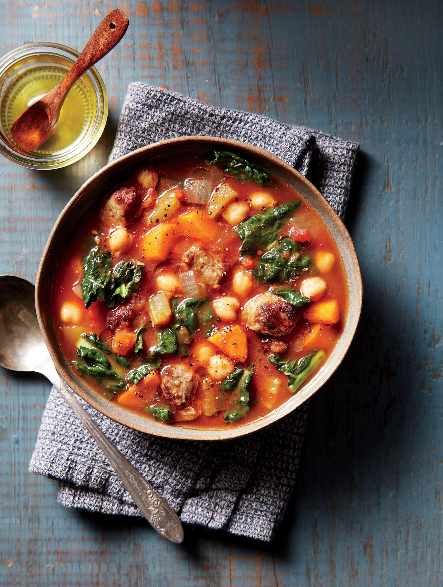

Garbanzo Bean Soup

This soup is hearty and zesty, perfect for a cold winter day with company
Ingredients
- 3 Tablespoons Extra Virgin Olive Oil
- 3.5oz Spanish Chorizo, Sliced
- 1 Cup Diced Ham
- 1 Medium Onino, Chopped
- 1 Tablespoon Garlic Puree
- 1/2 Green Bell Pepper, Diced
- 6 Cups Chicken Broth
- 1 Ham Hock
- 5 Small Potatoes, Diced
- Two 29oz cans Garbano Beans, Rinsed and Drained
- 3-4 Bay Leaves
- Pinch of Vigo Saffron
- 1 Package Vigo Flavoring & Coloring
- Sea Salt & Ground Black Peppercorn, to Taste
- Hot Sauce (Optional)